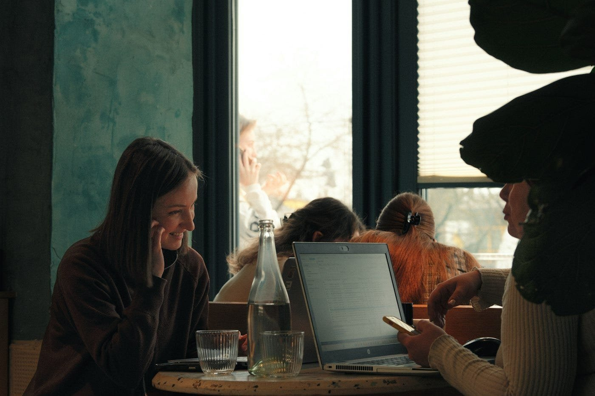
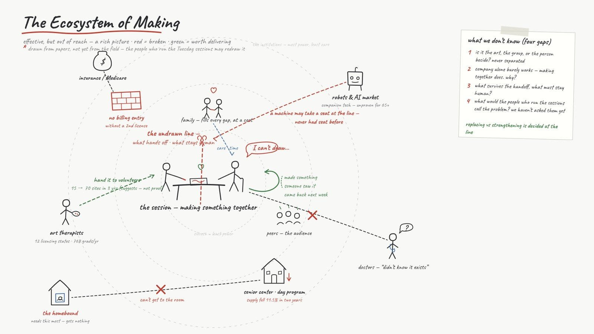
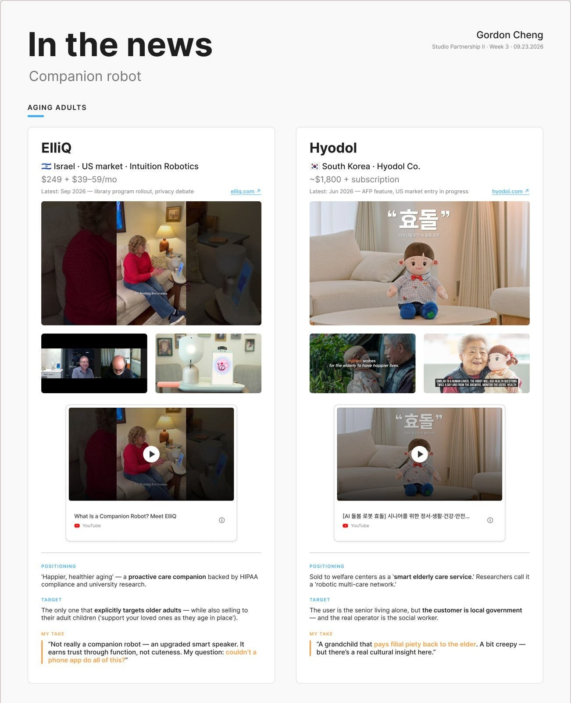
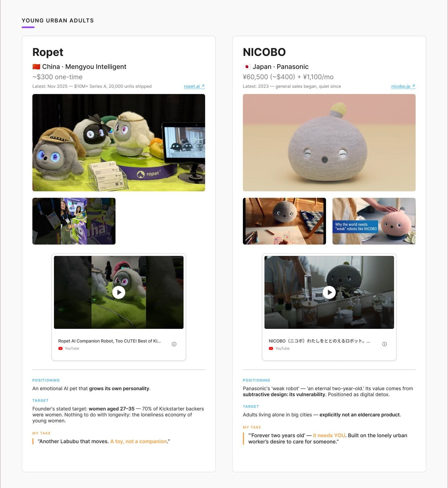
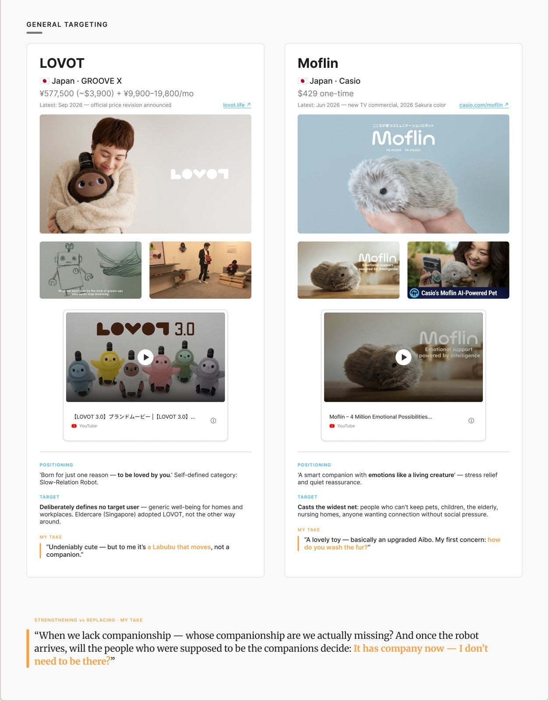
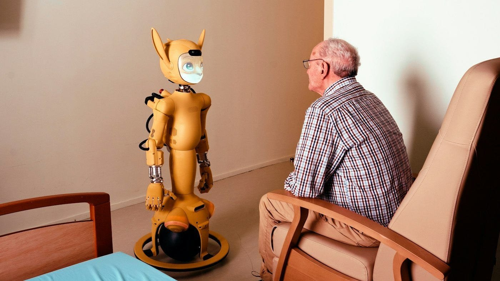
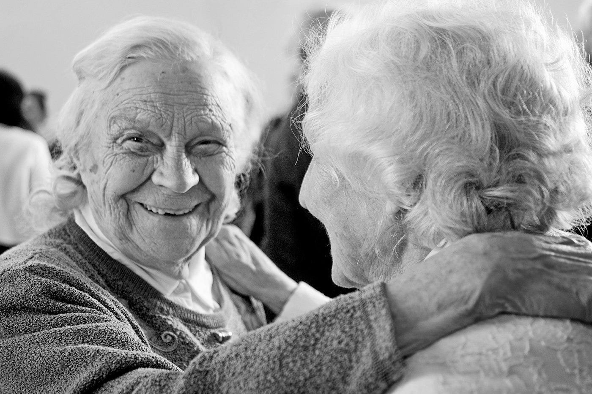

A team, a map, and a market of companions
A weekly log from Studio Partnership II at SVA MFA Interaction Design, built around the Stanford Center on Longevity Design Challenge. Separate from my thesis posts.
Week three of Studio Partnership II, and the project stopped being just mine. I went looking for two people who would see this differently from me. Found them. Abbie Lai is an MDes Interaction Design student at Emily Carr University and was an anthropologist before that, so she brings a researcher’s eye. Lesley Chung studies UX Design at SCAD and used to work at an advertising agency. She thinks in images. Their backgrounds mattered less than one plain fact: all three of us care about aging adults. We met the night before class and agreed on a direction, art and aging and robotics, with the exact problem still open.

Our problem statement is about group art programs for older adults. The evidence that they help with depression, cognition and loneliness is real. But they reach very few people, because every program runs on scarce human time: one trained person, a small group, once a week, usually inside a facility. The professional route can’t close that gap. Few states license art therapists, graduates number in the hundreds a year, and insurance billing usually needs a second clinical license. Day programs are shrinking. The people who can’t leave home get nothing at all. One program complicates the picture, in a useful way. Opening Minds through Art replaced credentialed therapists with volunteers trained in hours, not years, and grew from 15 sites to 70 in three years. So some of the work can be handed off. Which parts, nobody has mapped.
We also drew our first map of that system. At the center is one session: people making something together. Around it sit family, peers, art therapists, insurance, senior centers, doctors, and the robot market. Red marks where it breaks: no billing without a second license, shrinking day programs, homebound people who need it most and get nothing. A red dotted line runs through the table. That’s the line nobody has drawn yet, between what can be handed off and what has to stay human. Everything on this map came from papers. We wrote that on the map too, as a warning to ourselves: the people who actually run these sessions may redraw it.

“In the News” is a fixture of this class. Each week one or two students bring something recent that connects to the challenge, give a short critical review, and leave the class with a question or two. No slides allowed. Pinar gave us two tests for every story. Does it add independence or take away control? Does it strengthen relationships or replace them?
I went first. Instead of one story I brought a market, because companion robots are having a moment. One was just approved for Medicaid in Washington State. Another raised its price because demand is up. I laid out the ones actually on sale, grouped by who they say they are for. The sharpest contrast was Hyodol, a doll that looks after you like a grandchild, and NICOBO, a creature you look after like a toddler. ElliQ, the one closest to being a real product, is also the one furthest from what most of us would call companionship. The room’s reaction was close to mine. These things are, for now, a little creepy.



Here is where I stand, and it goes back to why I’m skeptical of companions at all. Most of these robots are built to receive affection. Whether a person can move real feeling onto a machine is a question too big for me, and I don’t want to build anything on it. I’m not against the technology. I think robots and AI are part of the answer to a happier old age. I’d just rather they point the other way, away from themselves, toward making the connection between one person and another smoother than it was. Phones turned many of us into islands. This generation of technology could join the islands back up. So it’s fine if someone likes the machine. It should never make them feel it loves them back.

I left the class with two questions. For a long life, which is stronger: a robot that cares for you, or one you care for? And once the robot arrives, will the people who should be there decide they no longer need to come?

That evening we did our first interview, with a recent art therapy graduate who ran painting groups for seniors in Chinatown. More on that next week.